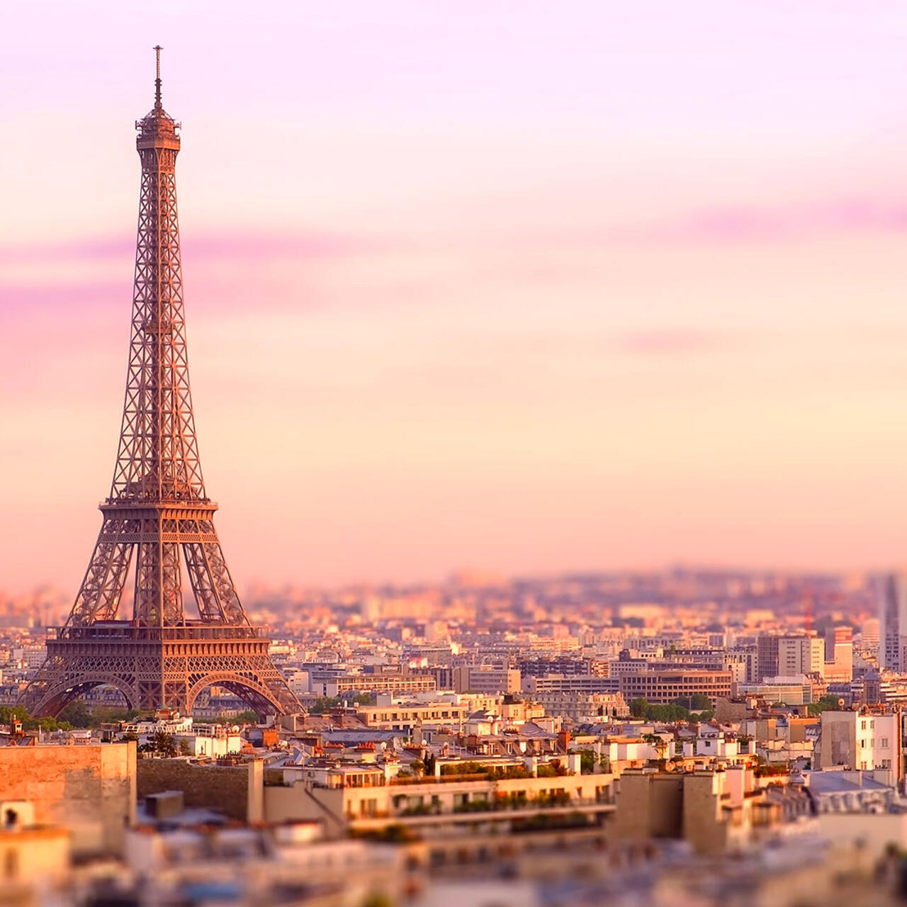
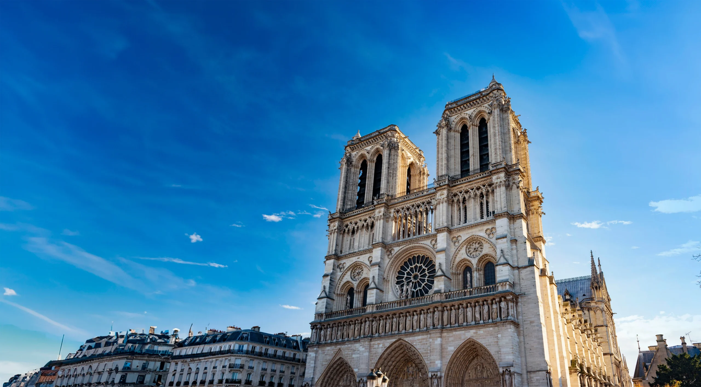
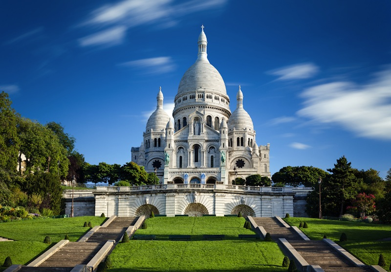

La Tour Eiffel :
Une dame de fer au cœur de Paris
En 1889, Paris accueille l'Exposition universelle, célébrant le centenaire de la Révolution française.
Pour marquer l'événement, un concours est lancé : il faut construire une tour monumentale sur le Champ-de-Mars.
C’est Gustave Eiffel, un ingénieur passionné par le métal, qui remporte le projet avec une tour en fer de 300 mètres de haut.
À l’époque, l’idée choque : beaucoup la trouvent laide, inutile, même monstrueuse.
Mais malgré les critiques, la construction commence en 1887.
Il faudra un peu plus de deux ans, 18 038 pièces de fer et plus de 2,5 millions de rivets pour ériger ce géant de fer.
Le 31 mars 1889, Gustave Eiffel grimpe lui-même les 1 710 marches pour planter le drapeau tricolore au sommet.
D’abord conçue pour n’être qu’éphémère, la Tour Eiffel finit par devenir un symbole.
Grâce à la télégraphie sans fil, puis à la radio, elle prouve son utilité.
Aujourd’hui, avec ses millions de visiteurs par an, elle est l’un des monuments les plus célèbres du monde.
Le Musée du Louvre
Le musée du Louvre, situé au cœur de Paris, est l'un des plus grands et des plus visités au monde. Il abrite des chefs-d'œuvre tels que la Joconde, la Vénus de Milo et le Code de Hammurabi. Ancien palais royal, il reflète toute la richesse culturelle et historique de la France.

La Cathédrale Notre-Dame de Paris
En 2025, Notre-Dame de Paris a rouvert ses portes après cinq années de restauration intense à la suite de l’incendie de 2019.
Le monument, chef-d’œuvre de l’art gothique, a retrouvé toute sa splendeur,
de sa charpente reconstruite à sa flèche emblématique, réinstallée selon les plans originaux de Viollet-le-Duc.
La cathédrale accueille à nouveau fidèles et visiteurs du monde entier.
À l’intérieur, le mobilier restauré, les vitraux nettoyés et l’éclairage repensé offrent une expérience inédite.
La visite est complétée par un parcours muséographique retraçant l’histoire du monument et de sa reconstruction.

Montmartre et le Sacré-Cœur
Montmartre est l’un des quartiers les plus pittoresques de Paris, célèbre pour son ambiance bohème et artistique.
Ses ruelles pavées, ses ateliers d’artistes et la place du Tertre, où peintres et portraitistes exposent encore aujourd’hui,
rappellent le charme d’un village d’antan au cœur de la capitale.
Dominant la butte, la basilique du Sacré-Cœur attire chaque année des millions de visiteurs.
Son dôme blanc offre un panorama exceptionnel sur tout Paris, particulièrement magique au coucher du soleil.
Entre patrimoine religieux et atmosphère créative, Montmartre incarne l’âme artistique et spirituelle de la ville.